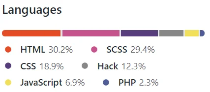

Hello I'm Joe, Welcome to my portfolio website; a showcase of some of my projects and abilities. I am a frontend developer. I enjoy challenges, and I strive for excellence with determination for continuous improvement. I'm looking forward to working together.
Portfolio Website Project:
Made with CSS flexbox grid layout
github
Giftshopstop Project: www
This was a freelance project. My client wanted to sell her handmade quilts online. It was made with Materialize;
A modern, responsive front-end framework based on Material Design.
It included full encryption on both the front
and back ends for money transfers.
I turned the add to cart button's off due to business closure.
Code Sample:
This is a sample of one of the forty-two cards I used to display the products. Each card contains a styled Add
to Cart
button. The customer can purchase using credit, debit, or PayPal. Each transaction sends an email receipt
to customers
and shipping directions for the vendor. Each product image includes a click magnifier.

Web Dev & IT Project: www
This was an independent project. I did it to become more familiar with flexbox grid layout features.
It is a responsive flexbox grid; two CSS layout modules that allows to create complex layouts.
Flexbox and CSS Grid share multiple similarities and many layouts can be solved with both.
Code Sample:
The CSS sample image defines the size of the .top-container class. The .showcase class defines
the
grid-template-areas: I am using CSS variables defined by a scope of root as shown in
box-shadow: var(--shadow);
Business Development Project:

This was my final project for Business Web Development.
This class focused on front end development and introduction to back
end development language's.
www
Holy Mercy Project:
This was an independent project; my personal website to share my creative writing.
To increase Google rankings, I learned SEO techniques, and to track visitors, I learned Anyalitics.
www